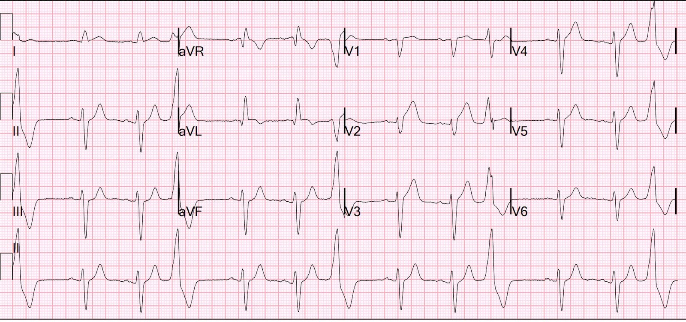
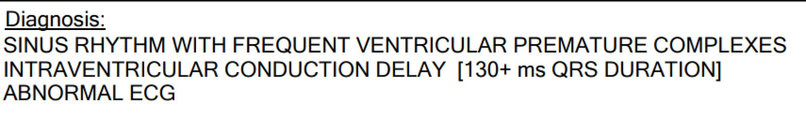
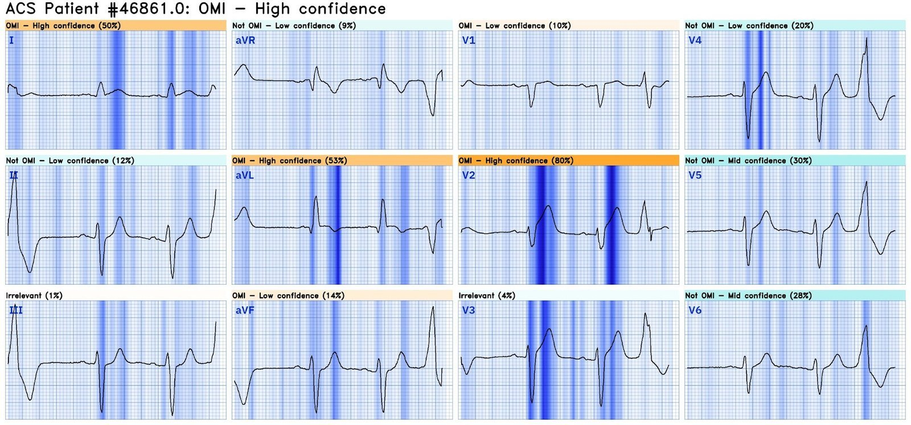
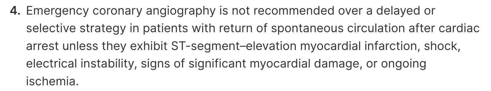
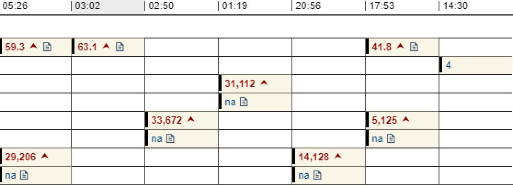
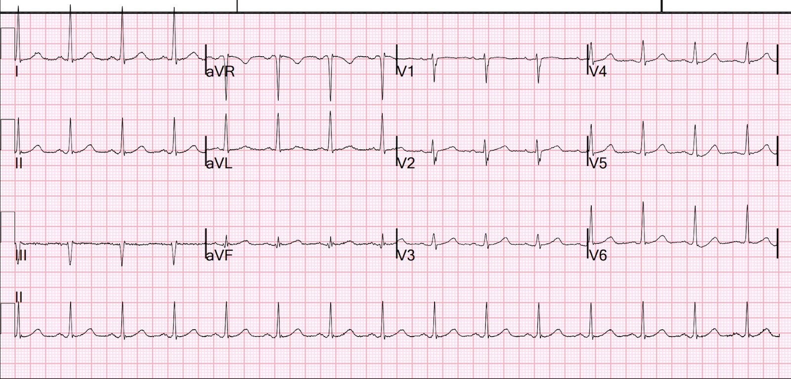
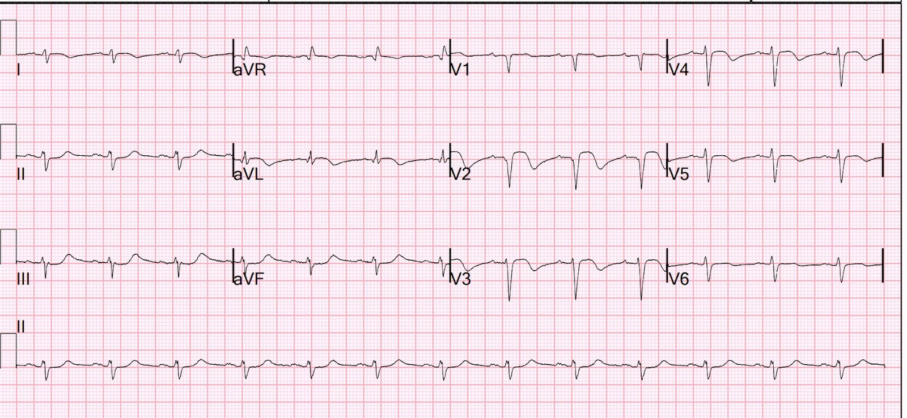
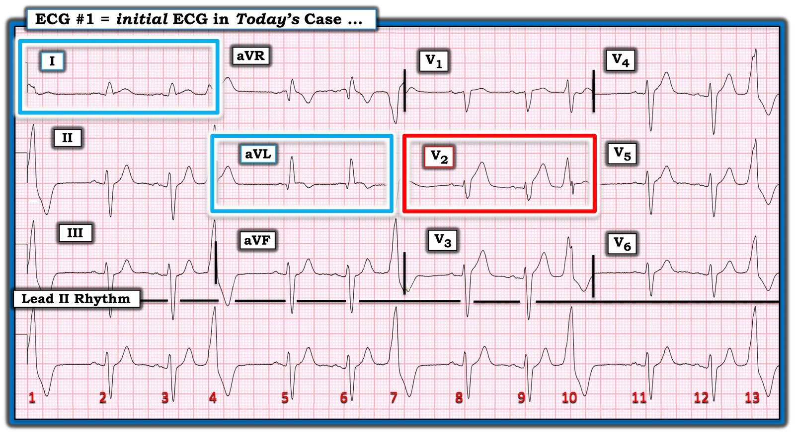

29/06/2024 — Hướng dẫn sẽ (một cách sai lầm) nói rằng bệnh nhân đã được khử rung và hồi sức này không cần chụp mạch vành cấp cứu
Bản dịch tiếng Việt của bài "Guidelines would (erroneously) say that this patient who was defibrillated and resuscitated does not need emergent angiography" – Dr. Smith’s ECG Blog. Giữ nguyên toàn bộ 9 hình ảnh của bản gốc.
Một bệnh nhân bị ngừng tim do rung thất và đã được khử rung thành công.
Đây là điện tâm đồ đầu tiên của anh ấy tại khoa cấp cứu (ED):


Kết quả đọc chính thức của bác sĩ tim mạch can thiệp:


Có ST chênh lên “không đủ chẩn đoán” ở V2-V4 và aVL.
Do đó, theo hướng dẫn ACC/AHA dựa trên các thử nghiệm COACT và TOMAHAWK, bệnh nhân này không nên được chụp mạch vành cấp cứu.
Nhưng có sóng T tối cấp và điều này rõ ràng là chẩn đoán tắc LAD đoạn gần. Không thể là gì khác.
Bạn có đưa bệnh nhân này vào một nghiên cứu phân ngẫu nhiên bệnh nhân ngừng tim do rung thất (VF) vào nhóm chụp mạch vành ngay lập tức so với trì hoãn không?
Dĩ nhiên là bạn sẽ không!! Vì chẩn đoán đã quá rõ ràng.
Bot AI PMCardio Queen of Hearts biết đây là OMI với độ tin cậy cao:


Bấm vào đây để đăng ký quyền truy cập Queen of Hearts
Phòng thông tim (cath lab) đã được kích hoạt bất chấp hướng dẫn.
https://www.ahajournals.org/doi/10.1161/CIR.0000000000001194 (bài đăng trên tạp chí Circulation của AHA)


Thử nghiệm COACT có sai sót chết người (xem bên dưới). Họ không lưu sổ đăng ký các bệnh nhân không được đưa vào nghiên cứu. Một bệnh nhân như ca này sẽ không được đưa vào vì không bác sĩ nào (bác sĩ cấp cứu hay bác sĩ tim mạch) lại đưa một bệnh nhân như vậy vào nghiên cứu.
Một nghiên cứu đáng tin cậy sẽ theo dõi tất cả bệnh nhân ngừng tim có nhịp sốc được và phân tích những người không được đưa vào nghiên cứu để xem kết cục của họ. Nghiên cứu này đã không làm vậy. Bằng chứng là chỉ 5% bệnh nhân được đưa vào có tắc mạch vành cấp. Con số này THẤP HƠN RẤT NHIỀU so với mọi nghiên cứu khác về ngừng tim có nhịp sốc được.
Troponin I độ nhạy cao lần đầu = 4 ng/L (gần dưới giới hạn phát hiện)
Chụp mạch vành:
–Thủ phạm là hẹp 99 % ở LAD đoạn gần, tại lỗ xuất phát (ostial)
–LCX là một nhánh bờ tù (OM) lớn với một nhánh bên lớn; nhánh bên này có tổn thương lan tỏa 90% ở đoạn gần sát lỗ xuất phát. Tổn thương này sẽ được can thiệp theo giai đoạn sau đó trong đợt nhập viện này.
Siêu âm tim:
Giảm chức năng tâm thu thất trái với phân suất tống máu ước tính 35 – 40 %.
Rối loạn vận động thành khu trú - vách từ giữa đến xa, thành trước, thành trước bên và mỏm.
Diễn biến troponin (đỉnh 33.672 — một nhồi máu lớn):


Điện tâm đồ sau PCI:


2 ngày sau:


Tóm tắt COACT và TOMAHAWK
Theo 2 thử nghiệm ngẫu nhiên này (TOMAHAWK và COACT, tài liệu tham khảo ở cuối bài), chụp mạch vành cấp cứu không có lợi ích trong ngừng tim “không có ST chênh lên.”
Các nghiên cứu này không đề cập đến các dấu hiệu OMI trên điện tâm đồ!!!
–Thử nghiệm COACT có nhiều vấn đề. Xem phần bàn luận của tôi ở cuối bài.
–Và trong thử nghiệm TOMAHAWK gần đây hơn, phần lớn bệnh nhân hôn mê và tử vong do thiếu oxy não. Vì vậy, nếu bệnh nhân tỉnh và có dấu hiệu OMI trên điện tâm đồ, không có lý do gì để tin rằng nên trì hoãn chụp mạch vành.
Thử nghiệm COACT:
Thử nghiệm COACT có sai sót chết người, và vì nó, nhiều bác sĩ tim mạch tin chắc rằng nếu không có tiêu chuẩn STEMI thì bệnh nhân không cần vào phòng thông tim.
Lemkes JS, Janssens GN, van der Hoeven NW, và cs. Coronary Angiography after Cardiac Arrest without ST-Segment Elevation (Chụp mạch vành sau ngừng tim không có ST chênh lên). N Engl J Med [Internet] 2019; truy cập tại: http://dx.doi.org/10.1056/NEJMoa1816897
Có nên đưa tất cả bệnh nhân ngừng tim có nhịp sốc được đi chụp mạch vành bất kể có STEMI hay không?
Từ lâu đã có tranh cãi về việc có nên đưa bệnh nhân có nhịp sốc được mà không có ST chênh lên vào phòng thông tim hay không, và một thử nghiệm ngẫu nhiên gần đây cho thấy không có lợi ích: Coronary Angiography after Cardiac Arrest without ST-Segment Elevation (COACT). Nghiên cứu này có một sai sót chết người: họ không theo dõi tất cả các “bệnh nhân không STEMI” KHÔNG được đưa vào nghiên cứu mà thay vào đó được chuyển chụp mạch vành ngay. Nghiên cứu được tiến hành ở châu Âu, nơi hướng dẫn đề nghị đưa tất cả các ca ngừng tim có nhịp sốc được vào phòng thông tim cấp cứu. Vì vậy, rất có khả năng các bác sĩ rất ngần ngại đưa vào nghiên cứu những bệnh nhân mà họ nghi ngờ có nhồi máu cơ tim do tắc (OMI), ngay cả khi họ không có STEMI. Các bác sĩ này không muốn một bệnh nhân bị OMI nhưng không phải STEMI bị phân ngẫu nhiên vào nhóm không chụp mạch vành. Nghi ngờ mạnh mẽ này được dữ liệu của họ ủng hộ: chỉ 22 trong 437 (5,0%) bệnh nhân trong nghiên cứu này có OMI.
Bao nhiêu phần trăm các ca ngừng tim có nhịp sốc được mà không có STE có OMI?
Sổ đăng ký lớn này trên Circulation năm 2010 báo cáo rằng ít nhất 1 tổn thương động mạch vành có ý nghĩa được tìm thấy ở 128 (96%) trong 134 bệnh nhân có ST chênh lên trên điện tâm đồ ghi sau khi tái lập tuần hoàn tự nhiên, và ở 176 (58%) trong 301 bệnh nhân không có ST chênh lên.
5% so với 58%!! Rõ ràng đã có sai lệch khi đưa vào nghiên cứu (enrollment bias) đáng kể trong COACT.
Chúng tôi tại Hennepin gần đây đã công bố nghiên cứu này
Sharma và cs. (cùng Smith và những người khác) nhận thấy rằng ở những bệnh nhân ngừng tim có nhịp sốc được bị OMI, điện tâm đồ ban đầu và điện tâm đồ tiếp theo trước chụp mạch vành chỉ có độ nhạy 75% đối với OMI, với độ đặc hiệu tương tự.
Sharma A, Miranda DF, Rodin H, Bart BA, Smith SW, Shroff GR. Do not disregard the initial 12 lead ECG after out-of-hospital cardiac arrest: It predicts angiographic culprit despite metabolic abnormalities (Đừng bỏ qua điện tâm đồ 12 chuyển đạo ban đầu sau ngừng tim ngoài bệnh viện: nó tiên đoán thủ phạm trên chụp mạch vành bất chấp các bất thường chuyển hóa). Resuscitation Plus [Internet] 2020;4:100032. Truy cập tại: http://www.sciencedirect.com/science/article/pii/S2666520420300321

===================================
BÌNH LUẬN CỦA TÔI, bởi KEN GRAUER, MD (29/6/2024):
===================================
Câu hỏi những bệnh nhân nào được hồi sức thành công sau ngừng tim cần được thông tim sớm vẫn đang được bàn luận.
- Như BS. Smith đã nói — câu trả lời theo trực giác lẽ ra phải hiển nhiên. NẾU điện tâm đồ ban đầu sau khử rung thành công cho thấy bằng chứng OMI cấp — những bệnh nhân này có rất nhiều lợi ích từ việc thông tim ngay lập tức kèm PCI.
Để rõ ràng, trong Hình 1 — tôi đã in lại điện tâm đồ ban đầu của ca hôm nay. Như BS. Smith đã nói — MẤU CHỐT nằm ở việc đánh giá chính xác bản ghi này.
- Nhịp là nhịp ba thất (tức là, cứ mỗi nhát thứ 3 là một PVC).
- Sóng P xoang thấy rõ ở chuyển đạo II. Phức bộ QRS rộng — với hình dạng QRS gần giống nhất với LBBB (blốc nhánh trái — Left Bundle Branch Block) — xác định dựa trên các phức bộ QRS chủ yếu dương ở các chuyển đạo bên trái I và aVL. (Nhiều trường hợp LBBB chỉ có sóng R dương hoàn toàn ở các chuyển đạo xa về phía bên hơn V6 — nên hình dạng RS ở chuyển đạo V6 ở đây không loại trừ LBBB).
- Dù bạn xếp rối loạn dẫn truyền này là “LBBB” hay IVCD (chậm dẫn truyền trong thất — IntraVentricular Conduction Defect) — hình dạng QRS vẫn nên được đánh giá như với LBBB.
- Với LBBB — bình thường không thấy sóng Q ở các chuyển đạo I và aVL (vì hướng khử cực vách bình thường từ trái sang phải bị đảo ngược do nhánh trái bị tổn thương — dẫn đến hướng khử cực vách từ phải sang trái, về cơ bản làm mất các sóng q vách “bình thường”). Do đó, các sóng Q mà ta thấy ở chuyển đạo I và aVL trong Hình 1 (đặc biệt là sóng Q rộng ở chuyển đạo aVL) — là dấu hiệu cho thấy nhồi máu vách đã xảy ra vào một thời điểm nào đó. Như các gạch đầu dòng dưới đây — “thời điểm” đó nhiều khả năng nhất là nguyên nhân gây ngừng tim ở bệnh nhân này.
- Như BS. Smith đã nói — dấu hiệu ST-T đáng chú ý nhất ở điện tâm đồ #1 — là ST thẳng đuỗn và kích thước sóng ST-T tăng lên mất cân xứng rõ rệt ở chuyển đạo V2 (trong hình chữ nhật ĐỎ). Bất chấp rối loạn dẫn truyền — không có cách nào sóng ST-T này ở chuyển đạo V2 có thể bình thường được. Thay vào đó, sóng T tối cấp rõ ràng này ở chuyển đạo V2 gợi ý OMI do LAD cho đến khi chứng minh được điều ngược lại.
- Các dấu hiệu ST-T đáng chú ý tiếp theo nằm trong các hình chữ nhật XANH DƯƠNG (tức là, trong chuyển đạo I và aVL). Bình thường — sóng ST-T trong RBBB hoặc LBBB đơn thuần có hướng ngược với sóng cuối cùng của QRS ở các chuyển đạo bên trái này (Để biết thêm về các dấu hiệu này trong LBBB — Xin xem Bình luận của tôi trong bài đăng ngày 17 tháng Chín năm 2020 trên Dr. Smith’s ECG Blog).
- Thay vào đó, ở chuyển đạo I — đoạn ST hoàn toàn không chênh xuống, và sóng T dương ở chuyển đạo này (trong khi ở chuyển đạo I với LBBB — bình thường phải có ST-T chênh xuống). Đây là một thay đổi ST-T nguyên phát, mà ở bệnh nhân đau ngực (hoặc ngừng tim) — cho thấy một biến cố cấp đang diễn ra cho đến khi chứng minh được điều ngược lại.
- Đáng chú ý hơn nữa — là ST dạng vòm (coving) với gợi ý ST chênh lên và sóng T đảo ngược ở chuyển đạo aVL. Hình dạng sóng ST-T này ở chuyển đạo aVL ngược với ST-T chênh xuống dự kiến ở chuyển đạo aVL khi có LBBB. Nói đơn giản — hình dạng sóng ST-T ở chuyển đạo aVL trông giống một nhồi máu cơ tim cấp đang tiến triển (và càng củng cố thêm dấu hiệu tắc LAD cấp).
- TÓM LẠI: Ở một bệnh nhân vừa được khử rung sau ngừng tim — khó mà tưởng tượng điện tâm đồ #1 có thể được diễn giải theo cách nào khác ngoài biểu hiện của OMI do LAD cấp cần thông tim sớm kèm PCI.

